Marketing Manager Portfolio
Anushay Zehra
KFC Canada · Marketing Manager · Selected work across entertainment, gaming, sport, retail and social activations
01. About
There’s a person behind the campaign results.
I build campaigns the same way I approach most things: with care for the details and an instinct for what feels right. On the job, that means owning a project from brief to launch, keeping a dozen stakeholders aligned, and finding the AI-assisted shortcut that buys the team an extra day. Off the clock, it means a good workout class, a well-made matcha, and a genuine love for beauty, jewelry and getting dressed up for no reason at all.
Professionally
- Campaign Management
- Project Management
- AI-Optimized Workflows
- Stakeholder Management
- Cross-Functional Impact
- Retail Execution
Personally
- Fashion
- Health & Fitness
- Workout Classes
- Beauty
- Matcha
- Jewelry
- Content Creation
Selected Work: Film Partnership
F1® The Movie x KFC Canada
Turned a film partnership into a digital growth engine.
Sources: KFC x F1 The Movie wrap report; Foodgressing article.
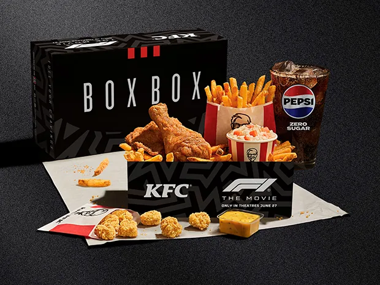
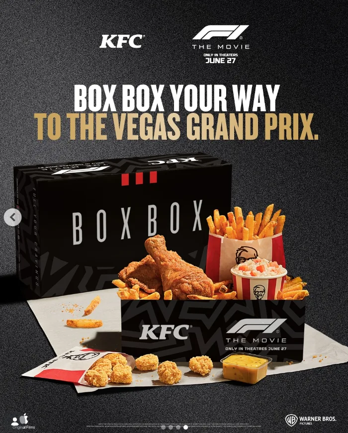
Selected Work: Sports Marketing
Kyle F#*@in’ Connor Meal
Made a fan nickname feel official.
Sources: GlobeNewswire announcement; user-provided project context.
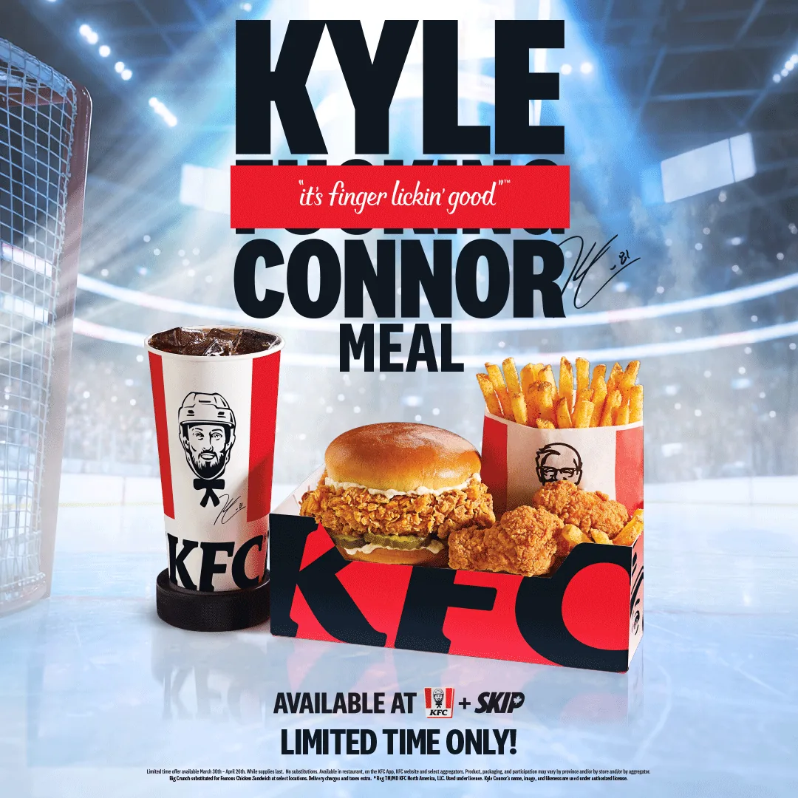
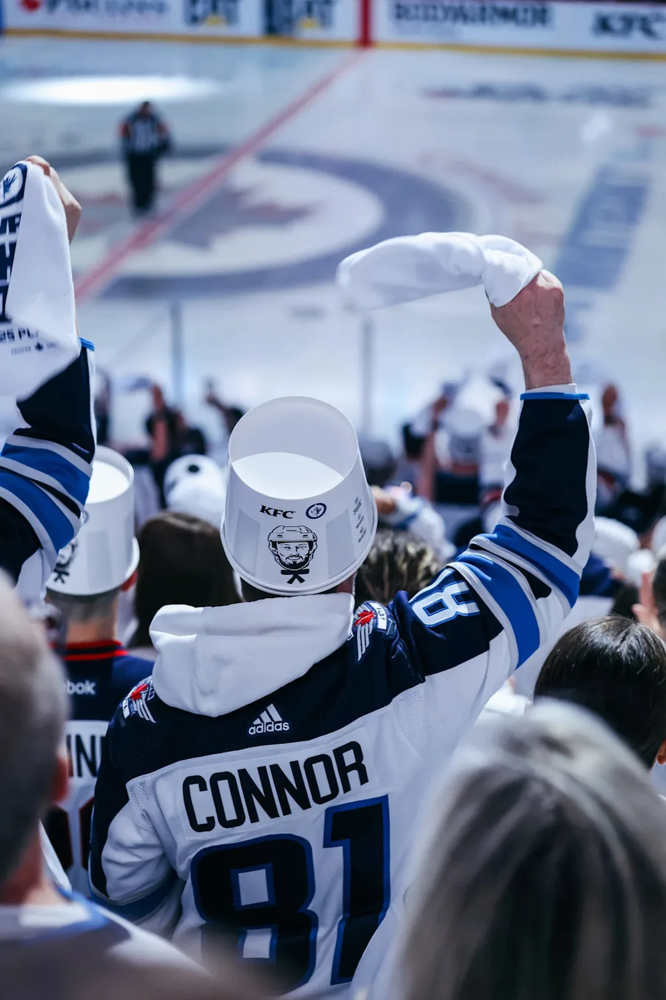
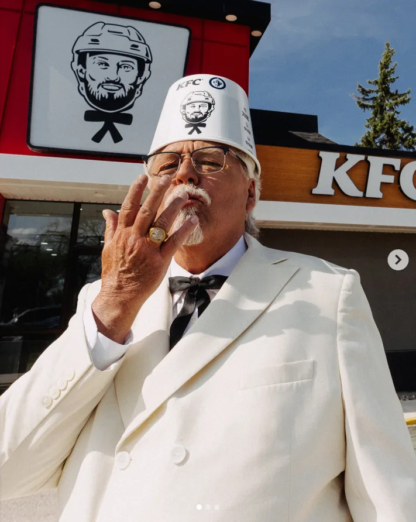
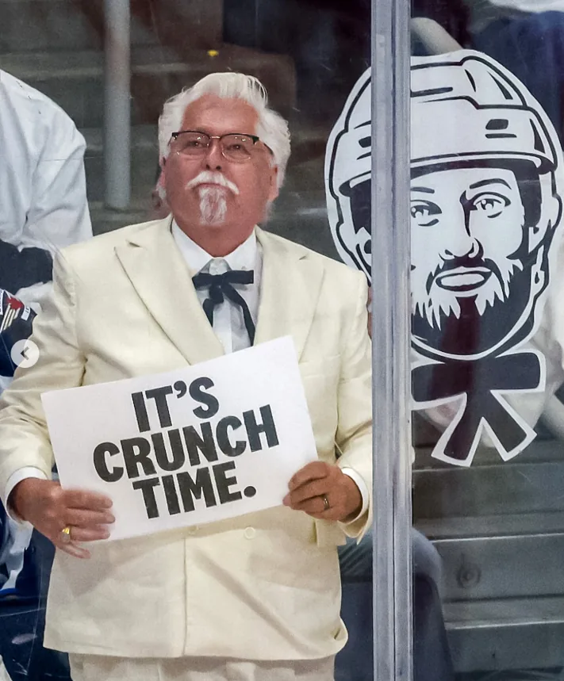
Selected Work: Brand Collaboration
KD x KFC Canada
Built a two-way comfort-food collision.
KD entered KFC restaurants. KFC entered grocery aisles.
Sources: BusinessWire announcement; user-provided project context.
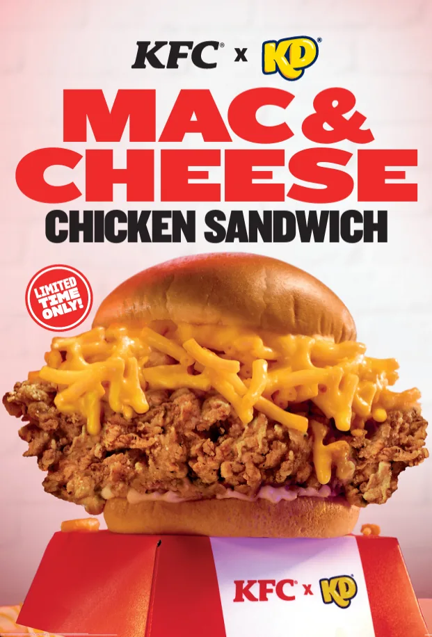
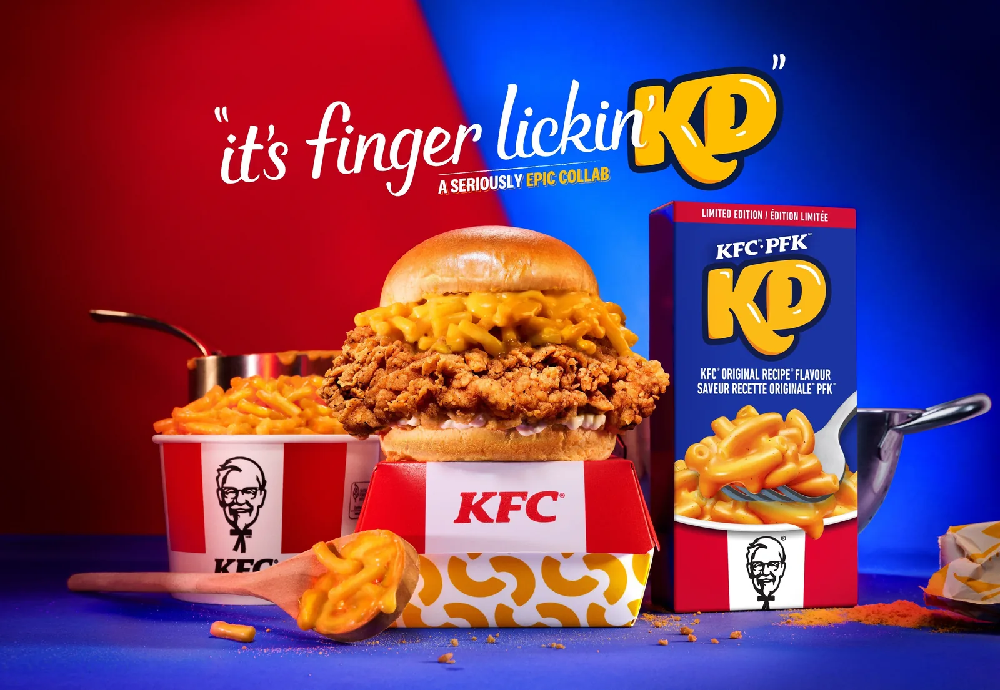
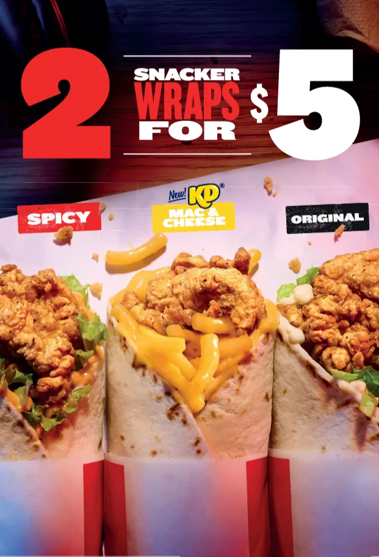
Selected Work: Gaming Culture
KFC x DOOM: The Dark Ages
Made a gaming meme work harder for delivery.
Tapped the “DOOM runs on anything” subculture and brought it to KFC kiosks.
Sources: user-provided campaign results; Xbox DOOM launch materials; Instagram and Reddit links.
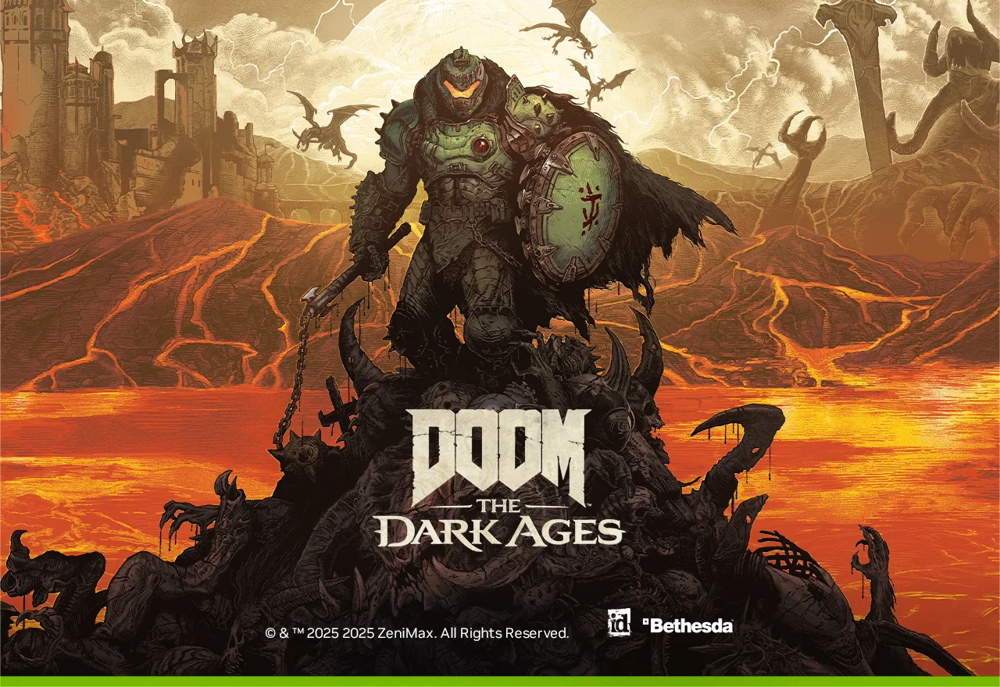
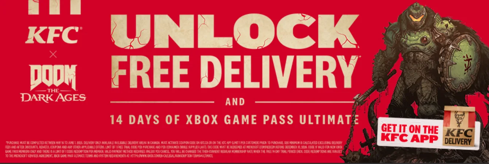
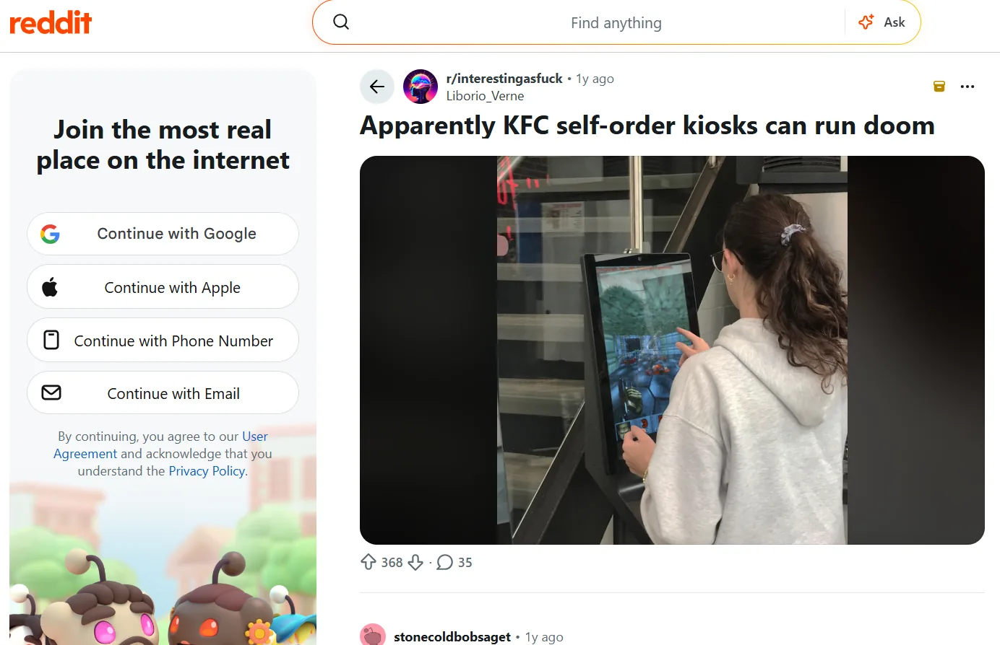
Selected Work: Snack Collaboration
Ruffles x KFC Zinger Chips
Turned a snack collab into a social ritual.
Sources: Ads of the World case study; user-provided project context.
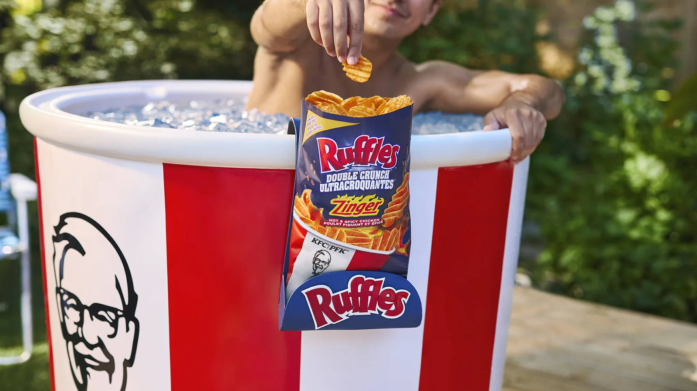
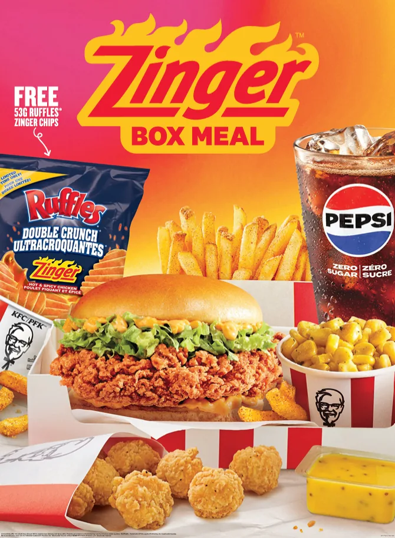
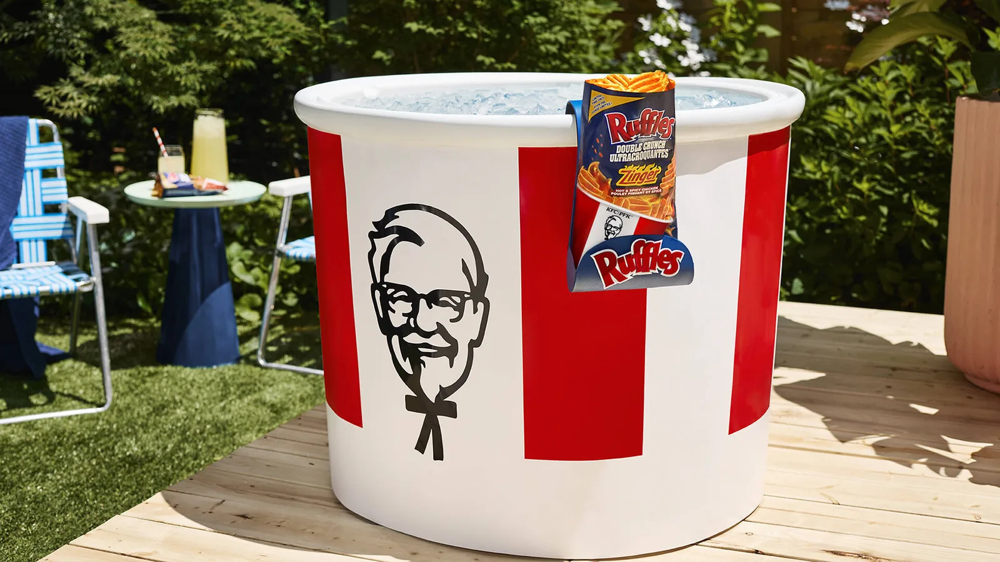
Selected Work: Value Platform
Twosdays & $5 Sandwich of the Day
Brought back some great value, and the Colonel wasn’t happy… but everyone else was.
Sources: Ads of the World case study; user-provided project context.
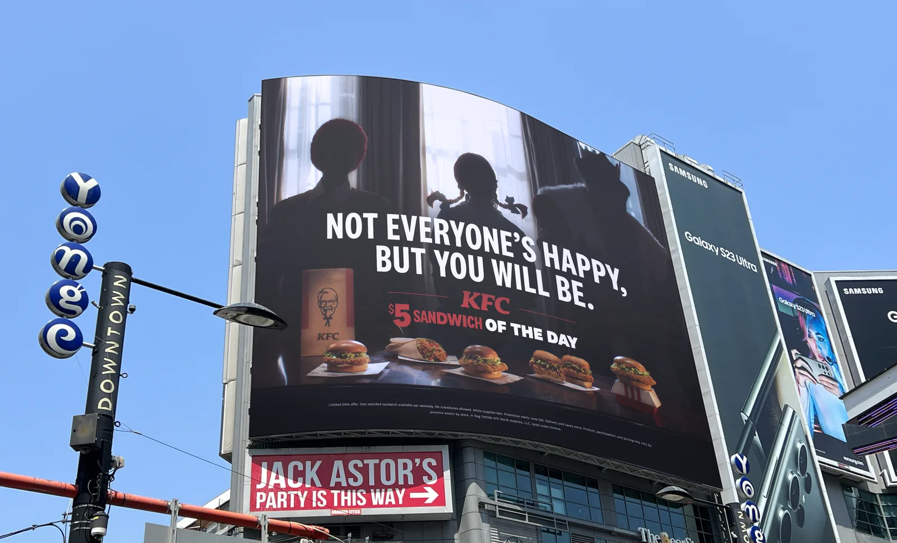
Get In Touch
Bringing this energy to what’s next.
The campaigns above are what I built at KFC Canada. I’m looking for my next challenge, let’s talk.
anushay_zehra@hotmail.com© 2026 Anushay Zehra.